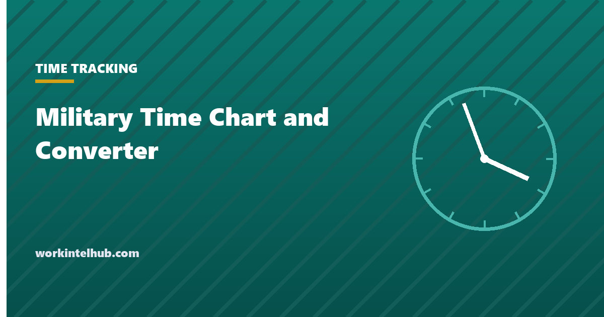

Military Time Chart and Converter

Military time is the 24-hour clock written as four digits with no colon and no a.m. or p.m.: 0730 is 7:30 in the morning, 1930 is 7:30 in the evening. The United States is one of the few countries where most people use the 12-hour clock in daily life, which is why the 24-hour version has a special name here and why it trips people up at the point where it matters most: a shift that starts at 1900, a medication due at 0600, a flight at 2215.
The converter below works in both directions and shows how to say the time; the chart gives every hour at a glance. The rest of the page covers the conversion rule, the two ways to write midnight, and where the 24-hour clock is standard in US workplaces.
Military time converter
Military time has no colon and no a.m. or p.m. Midnight is 0000 at the start of a day and 2400 at the end of one; hospitals and most timekeeping systems use 0000.
Military time chart
| 12-hour time | Military time | Spoken as |
|---|---|---|
| 12:00 a.m. (midnight) | 0000 | Zero hundred hours |
| 1:00 a.m. | 0100 | Zero one hundred hours |
| 2:00 a.m. | 0200 | Zero two hundred hours |
| 3:00 a.m. | 0300 | Zero three hundred hours |
| 4:00 a.m. | 0400 | Zero four hundred hours |
| 5:00 a.m. | 0500 | Zero five hundred hours |
| 6:00 a.m. | 0600 | Zero six hundred hours |
| 7:00 a.m. | 0700 | Zero seven hundred hours |
| 8:00 a.m. | 0800 | Zero eight hundred hours |
| 9:00 a.m. | 0900 | Zero nine hundred hours |
| 10:00 a.m. | 1000 | Ten hundred hours |
| 11:00 a.m. | 1100 | Eleven hundred hours |
| 12:00 p.m. (noon) | 1200 | Twelve hundred hours |
| 1:00 p.m. | 1300 | Thirteen hundred hours |
| 2:00 p.m. | 1400 | Fourteen hundred hours |
| 3:00 p.m. | 1500 | Fifteen hundred hours |
| 4:00 p.m. | 1600 | Sixteen hundred hours |
| 5:00 p.m. | 1700 | Seventeen hundred hours |
| 6:00 p.m. | 1800 | Eighteen hundred hours |
| 7:00 p.m. | 1900 | Nineteen hundred hours |
| 8:00 p.m. | 2000 | Twenty hundred hours |
| 9:00 p.m. | 2100 | Twenty-one hundred hours |
| 10:00 p.m. | 2200 | Twenty-two hundred hours |
| 11:00 p.m. | 2300 | Twenty-three hundred hours |
| 12:00 a.m. (end of day) | 2400 | Twenty-four hundred hours |
Minutes are read as they are: 1430 is "fourteen thirty", 0905 is "zero nine zero five". Half-past and quarter-to are not used. Printing the chart and taping it beside the time clock is the traditional solution for a workforce moving from a.m./p.m. to 24-hour scheduling, and it is still the fastest one.
The conversion rule
- Morning hours (1:00 a.m. to 9:59 a.m.) keep their number and gain a leading zero: 7:15 a.m. is 0715.
- 10:00 a.m. to 12:59 p.m. stay the same with the colon removed: 11:40 a.m. is 1140; 12:30 p.m. is 1230.
- Afternoon and evening (1:00 p.m. to 11:59 p.m.) add 12 to the hour: 3:45 p.m. is 1545; 11:59 p.m. is 2359.
- Going back, subtract 12 from any hour of 13 or more and add p.m.; hours 01 to 11 are a.m.; 12 is noon.
- Midnight is 0000 as the start of a day and 2400 as the end of one. A shift "2200 to 0600" runs overnight; a deadline of "2400 Friday" is the last instant of Friday. Hospitals, payroll systems and most software use 0000 only, because 2400 breaks sorting.
Timekeeping systems store the 24-hour value and display whichever format is set, so the format an employee sees on a clock terminal may differ from the one on a printed schedule. Where hours are being added for payroll, the hours calculator and the minutes-to-decimal chart take either format; a shift from 2200 to 0630 with a 30-minute break is 8.0 hours whichever way it is written.
Where the 24-hour clock is used in the US
The military is the origin of the name and uses it universally, along with "Zulu time", which is Coordinated Universal Time written with a Z (1500Z). Hospitals and emergency services use it because the difference between 0800 and 2000 is the difference between a morning and an evening dose. Aviation uses it for every schedule and clearance, in UTC for air traffic control and local time for passengers. Railways, shipping, law enforcement logs, and most shift-based industries that run around the clock use it for the same reason: a schedule written in 24-hour time cannot be misread by dropping the a.m. or p.m.
In offices it appears in timekeeping and payroll systems, in server logs and in any calendar shared across time zones, where 12-hour times and "noon" produce a disproportionate share of missed meetings. Employers rolling out 24-hour scheduling to a workforce used to the 12-hour clock usually print both for a month. The rotating shift schedules guide and the schedule template both output 24-hour times for that reason.
Key takeaways
- Military time is the 24-hour clock as four digits with no colon and no a.m. or p.m.: 0730 is 7:30 a.m., 1930 is 7:30 p.m.
- Add 12 to any afternoon or evening hour; give morning hours a leading zero; 12 stays 12 for noon.
- Midnight is 0000 at the start of a day and 2400 at the end; systems use 0000.
- Say it as hours then minutes: 1430 is fourteen thirty, 0905 is zero nine zero five, 1400 is fourteen hundred hours.
- The military, hospitals, aviation, emergency services and round-the-clock industries use it because it cannot be misread.
- Print the chart beside the time clock when moving a workforce to 24-hour scheduling.
Frequently asked questions
How do you convert military time to regular time?
If the hour is 13 or more, subtract 12 and add p.m.: 1545 is 3:45 p.m. If the hour is 01 to 11, add a.m.: 0715 is 7:15 a.m. 1200 is noon and 0000 is midnight. Minutes do not change.
What is 1300 in military time?
1:00 p.m. Subtract 12 from 13 to get 1, and because the original hour was 13 or more it is afternoon. It is spoken as thirteen hundred hours.
Is midnight 0000 or 2400?
Both are used. 0000 is midnight as the first moment of a new day; 2400 is midnight as the last moment of the day that is ending. A shift ending at 2400 Friday and one starting at 0000 Saturday are the same instant. Timekeeping and hospital systems use 0000 because 2400 breaks time ordering.
How do you say military time out loud?
Hours first, then minutes, with 'hundred' for times on the hour and 'zero' for a leading zero: 0800 is zero eight hundred, 1400 is fourteen hundred, 1430 is fourteen thirty, 0905 is zero nine zero five. The word 'hours' is added in formal military use.
Is military time the same as the 24-hour clock?
Almost. The 24-hour clock is written with a colon (14:30) and is standard in most of the world. Military time drops the colon (1430), adds a leading zero for single-digit hours, and is spoken in a fixed way. The conversions are identical.
Why do hospitals and the military use it?
Because a time written without a.m. or p.m. cannot be misread. A dose at 0800 and one at 2000 look different at a glance; 8:00 with a smudged a.m. does not. The same logic applies to flight schedules, shift rosters and any log where an error costs money or safety.